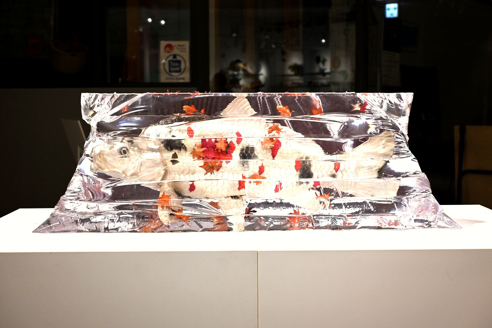

錦秋
KINSHU異なる銅合金と金工の技法から引き出された、それぞれの金属の色。その色が重なり合い、一つの景色を織りなす。
色糸を織り重ねた錦に見立てて、実りの季節である秋の彩りを会場いっぱいに組み立てた、大学院修了の節目の展示。
構図
COMPOSITION- 大波《紅葉》。壁面・展示台・床の全体に、右側を多く。散って舞う葉は壁や展示台の側面に留めた
- 富士《錦鯉》。会場の中央の左下に据えた
- 舟《朱色和金群》。紅葉とは逆に、左側を多く
会場の大きな配置は、葛飾北斎《冨嶽三十六景 神奈川沖浪裏》の構図にならって組まれた。ほとんどの作品は展示台に載せて高さを出している。
三つの作品
WORKSステートメント
STATEMENT「秋」の語源の一説に、草木が実り、満ち足りることを意味する「飽きる」に由来するという考えがある。
実りの季節である秋は、一つの巡りが満ち、次の季節へと移り変わる節目でもある。
大学院の修了を迎えるにあたり、これまで培ってきた知識や技術の集大成と、その先へと歩みを進める節目を、秋の情景に重ねた。
本作では、様々な銅合金と金工技法を用い、それぞれの素材が持つ固有の色彩や、表面処理によって生まれる多様な色と模様を引き出している。
異なる金属の色彩が重なり合い、一つの景色を織りなす様子を、色糸を織り重ねた錦に見立て、秋の豊かな彩りを表現した。
積み重ねてきた学びが一つの形として実を結び、やがて新たな表現へとつながっていく。
本作《錦秋》には、これまでの歩みへの想いと、次なる季節への願いを込めている。
河﨑海斗
その後の展示
AFTER- 《錦鯉》を3人展「MATSURI INORU」（Spiral Garden 新丸ビル、東京・丸の内）で展示
- 《朱色和金群》を「工＋藝」京都 2026（大本山 妙顕寺）に出品